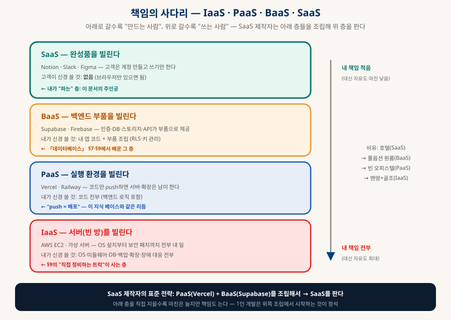
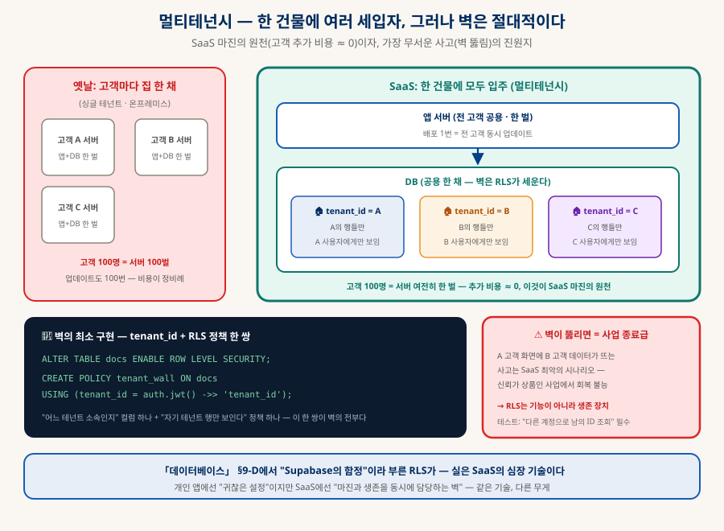
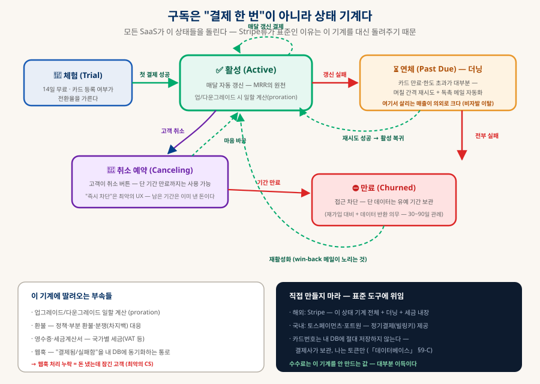
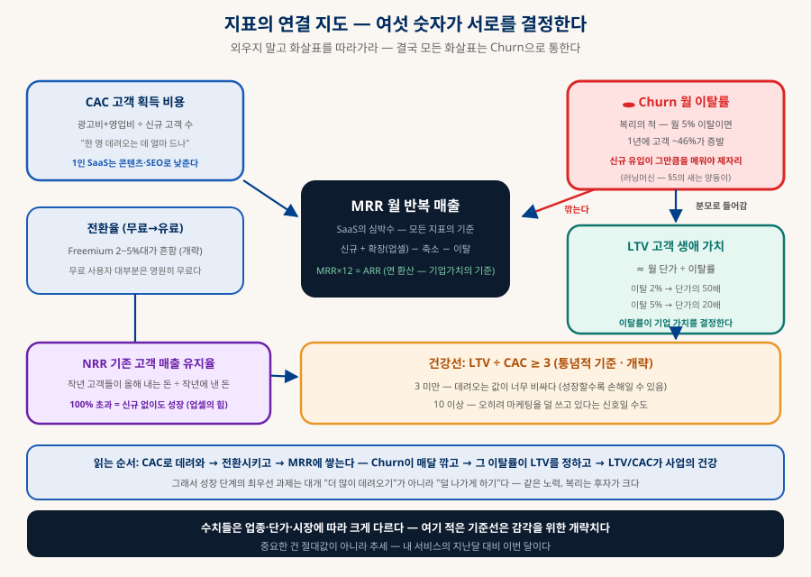

SaaS 해부
접속을 파는 사업의 처음부터 끝까지
SaaS는 소프트웨어를 파는 사업이 아니라 접속을 파는 사업이다. 그 한 문장에서 모든 것이 갈라진다 — 멀티테넌시라는 기술 구조, 구독이라는 돈의 구조, Churn이라는 중력, 그리고 "책임의 구독"이라는 무게까지. 아이디어 검증에서 우아한 폐업까지, 생애주기 전체를 한 장의 지도로 해부한다.
0. 한눈에 보기 — 네 개의 심장
이 문서 전체가 이 네 문장의 전개다
계정 — 소유 구조의 전환 (§1)
기술의 심장 (§2)
사업의 심장 (§5)
죽음의 사신 (§5)
1. SaaS의 정체 — 소프트웨어가 아니라 접속을 판다
배포 방식의 전환이 아니라 소유 구조의 전환이다
| 패키지 소프트웨어 (옛날) | SaaS | |
|---|---|---|
| 고객이 사는 것 | 소프트웨어 사본 (CD·다운로드) | 접속 권한 (계정) |
| 실행 장소 | 고객의 컴퓨터 | 내 서버 — 코드가 고객에게 가지 않는다 |
| 업데이트 | 고객이 설치 (버전 파편화) | 내가 배포하면 전원 즉시 최신 |
| 과금 | 한 번 (버전 재구매를 기다림) | 구독 — 매달 자동 반복 |
| 해적판 | 복사되면 끝 | 원리적으로 불가 — 줄 코드가 없다 |
A클라우드 스택에서의 위치 — 책임의 사다리

읽는 법은 하나다 — 아래로 갈수록 "만드는 사람", 위로 갈수록 "쓰는 사람". 그리고 SaaS 제작자는 이 사다리의 중간에 서 있다: 자기 아래 층들(Vercel·Supabase)을 빌려서, 자기 위 층(완성품)을 판다. 님이 Supabase를 배운 것은 SaaS 제작자의 부품 공부였던 셈이다. 아래 층을 직접 지을수록(IaaS로 내려갈수록) 마진은 늘지만 책임도 늘어난다 — 1인 개발이 위쪽 조립에서 시작하는 것이 정석인 이유다.
2. SaaS를 SaaS로 만드는 세 기둥
멀티테넌시(기술) · 구독(돈) · 지속 배포(운영)
B기둥 ① 멀티테넌시 — 한 건물에 여러 세입자
고객마다 서버를 따로 주는 게 아니라, 하나의 앱·하나의 DB에 모든 고객이 동거하되 서로의 데이터를 절대 볼 수 없게 격리한다. 고객 1명을 추가하는 비용이 0에 수렴하는 것 — 이것이 SaaS 마진의 원천이다. 그리고 그 격리의 벽을 DB 층에서 세우는 표준 도구가 RLS다:

C기둥 ② 구독 — 매출의 시간 구조 전환
한 번에 100을 받는 대신 매달 10을 받는다. 대신 그 10이 자동으로 반복되고, 다음 달 신규 고객의 10이 그 위에 쌓인다. 매출이 매달 0에서 다시 시작하지 않는 것 — 이 한 줄이 SaaS 사업 모델의 전부이고, §5에서 이 구조의 빛(복리)과 그림자(Churn)를 해부한다.
D기둥 ③ 지속 배포 — 설치가 없으므로 버전이 없다
고객 전원이 항상 같은 최신 버전을 쓴다. "구버전 지원"이라는 지옥이 사라지는 대신, 내가 배포를 망치면 전 고객이 동시에 죽는 지옥이 생긴다. 「AI 시대의 개발 프로세스」에서 "배포 버튼은 사람이 누른다"고 한 그 버튼의 무게가 SaaS에서 가장 무겁다 — 그래서 기계 게이트·스테이징·롤백 준비가 취미 프로젝트와 SaaS를 가르는 실질적 경계선이 된다.
3. 전체 흐름도 — 생애주기 6단계
검증에서 우아한 종료까지 — 펄스가 도는 길을 눈으로 따라가 보자
4. 단계별 깊이 파기 — ⓪에서 ③까지
④성장은 §5(돈), ⑤확장·종료는 §6에서
E⓪ 검증 — 제일 많이 죽는 곳
SaaS 실패의 압도적 1위는 기술이 아니라 "아무도 그 문제로 돈을 내지 않는다"다. 그래서 순서가 코드보다 먼저다:
① 문제를 겪는 사람 10명과 대화
"지금 어떻게 해결하세요?"가 핵심 질문 — 경쟁자는 대개 다른 SaaS가 아니라 엑셀·수작업·방치다. 그게 진짜 시장 신호다.
② 랜딩 페이지 + 사전 등록
제품 없이 소개 페이지만 먼저 — 이메일을 남기는 사람의 수가 수요의 첫 측정치. 코드 0줄로 하는 검증이다.
③ 그 다음에야 코드
「데이터베이스」 §9-E의 착각 ①("처음부터 제일 좋은 걸로")이 여기서 치명적 — 검증 전의 모든 기술 투자는 잠재적 매몰 비용이다.
F① MVP — 2026년의 표준 조립
| 부품 | 표준 선택 | 연결 문서 |
|---|---|---|
| 프런트+서버 | Next.js (TypeScript) | 「기술 스택 고르기」 — TS가 AI 코딩의 공짜 게이트 |
| DB+인증+스토리지 | Supabase | 「데이터베이스」 §7·§9 — 결정 트리의 그 답 |
| 배포 | Vercel (PaaS) | push = 배포 — 이 지식 베이스와 같은 리듬 |
| 결제 | Stripe (해외) · 토스페이먼츠·포트원 (국내) | §4-C의 구독 상태 기계를 대신 돌려준다 |
| 개발 방식 | 바이브코딩 + 규칙 파일 | 「AI 시대의 개발 프로세스」 + LICENSE-RULES.md |
MVP의 기준은 한 줄이다 — "핵심 가치 1개가 작동하고, 돈을 받을 수 있다." 어드민 대시보드·설정 화면·다크모드·멋진 랜딩은 전부 나중이다. (스택 목록은 2026.08 스냅샷 — 이름은 바래도 "프런트/저장/배포/결제를 빌려 조립한다"는 구조는 남는다.)
G② 부품들 — 본체보다 부속이 많다
초보가 가장 놀라는 지점: 핵심 기능은 전체 코드의 절반도 안 된다. 나머지는 어느 SaaS나 똑같은 부속들이고, 그중 최대 난관이 구독 상태 기계다:

| 부속 | 핵심 포인트 |
|---|---|
| 인증 | 가입·로그인·재설정·이메일 인증·소셜 로그인 — Supabase Auth가 대부분 커버 |
| 구독·결제 | 위 상태 기계 + 웹훅 동기화(결제사 이벤트 → 내 DB). 웹훅 누락 = "돈 냈는데 잠긴 고객" — 최악의 CS |
| 테넌트·권한 | 처음부터 "개인도 1인 팀"으로 모델링 — 개인→팀 전환을 나중에 하면 스키마 대수술이 된다 |
| 트랜잭션 이메일 | 환영·재설정·영수증·알림 (Resend류) — 스팸함에 안 가게 하는 것 자체가 일이다 |
| 어드민 | 고객 조회·수동 환불·강제 로그인(고객 문제를 그 화면 그대로 재현) — 없으면 운영이 지옥 |
| 온보딩 | 가입 후 3분 안에 "아하"를 못 주면 이탈 — 빈 화면 대신 샘플 데이터·체크리스트 |
H③ 운영 — "만들기"에서 "지키기"로
서비스가 열리는 순간 일의 성격이 바뀐다. 「NAS와 개인 데이터 전략」에서 다룬 3-2-1 백업의 논리가 여기선 남의 데이터에 적용된다 — 내 사진을 잃으면 슬프지만, 고객 데이터를 잃으면 사업이 끝난다.
📡 모니터링 — 죽었는지 내가 먼저 안다
uptime 체크(외부에서 주기적 접속) + 에러 추적(Sentry류) + 상태 페이지(장애 시 고객 커뮤니케이션 창구). 고객이 트위터로 알려주는 구조면 이미 실패다.
💾 백업 — 관리형 ≠ 백업 완결
Supabase 자동 백업 + 주기적 별도 pg_dump(플랫폼 장애·계정 사고 대비). RAID≠백업의 교훈 그대로 — 한 공급자 안의 백업은 "2"이지 "1(오프사이트)"이 아니다.
🔐 보안 — 반복 점검 항목화
RLS 침입 테스트(§2), 키 로테이션, 의존성 검사(「오픈소스 라이선스」 게이트 ③과 같은 지점), 관리자 계정 2FA. 항목화해서 기계 게이트에 올릴 수 있는 것은 올린다.
🎧 지원 — 1인 SaaS의 숨은 최대 비용
고객 문의 시간이 개발 시간을 잠식한다 — 문서·FAQ·온보딩 개선이 지원 인력의 대체재. "같은 질문 2번 = 문서화 신호".
5. 돈의 구조 — 새는 양동이
왜 강력하고, 무엇이 잔인한가 — 물이 차오르는 과정을 눈으로
I지표의 언어 — 여섯 숫자면 건강 진단이 된다

J가격 전략 — 무엇에 얼마를 매길 것인가
| 모델 | 구조 | 맞는 경우 / 함정 |
|---|---|---|
| 무료 체험 (Trial) | 14일 전체 기능 → 결제 전환. 카드 선등록 여부가 갈림길 | 가치가 빨리 증명되는 제품. 카드 등록형은 전환율↑·유입량↓ |
| Freemium | 무료 티어 영구 제공 + 유료 상위 티어 | 유통이 넓어진다. 함정: 무료 사용자의 서버비를 유료가 부양 — 전환 2~5%대(개략)를 전제로 원가 계산 |
| 좌석당 (per-seat) | 사용자 수 × 단가 | 팀 도구의 표준 — 고객 팀이 크면 매출도 큼. 함정: 계정 공유 유인 |
| 사용량당 (usage) | API 호출·저장량·처리 건수 비례 | 인프라형 제품. 고객 성장 = 내 성장(NRR↑). 함정: 고객이 요금 예측을 못 하면 불안해서 떠난다 |
| 기능 티어 | Basic / Pro / Business 계단 | 대부분의 SaaS 기본형 — 상위 티어에 "팀 기능·권한·감사 로그"를 두는 것이 정석 (기업이 그걸 산다) |
6. 확장 또는 우아한 죽음
성공의 청구서와, 끝맺음의 의무
K성공하면 청구되는 것들
| 문제 | 증상 | 표준 처방 |
|---|---|---|
| 시끄러운 이웃 | 한 고객의 폭주(대량 조회·배치)가 전체를 느리게 | 테넌트별 사용량 제한(rate limit) · 큰 고객은 읽기 복제본으로 분리 |
| 단일 테넌트 요구 | 큰 고객이 "우리 데이터만 물리적 분리" 요구 (보안 규정) | 엔터프라이즈 티어로 별도 인스턴스 — 프리미엄 가격의 근거가 된다 |
| DB 한계 | 읽기 지연 → 쓰기 지연 순으로 온다 | 인덱스·캐시(Redis) → 읽기 복제 → 마지막에 샤딩 — 「데이터베이스」 §2의 그 사다리 |
| 규정 준수 | 기업 고객의 보안 점검표·개인정보 요구 | 감사 로그·데이터 처리 계약 — 이걸 갖춘 것 자체가 상위 티어 상품 |
다행인 것 — 이건 전부 성공한 다음의 문제고, Postgres 계열은 이 길이 잘 닦여 있다 (「데이터베이스」 §9-C 이사 표의 "Postgres→Postgres 쉬움"이 여기서 효자가 된다). §9-E의 착각 ①을 다시 소환하면: 이 표의 처방들을 미리 구현하는 것이 정확히 "출시 못 하는 병"이다.
L우아한 죽음 — 종료까지가 설계 대상이다
대부분의 SaaS는 크게 성공하지 않는다 — 그리고 그것은 실패가 아니라 통계다. 중요한 것은 끝맺음의 의무다. SaaS의 죽음은 패키지와 달리 고객의 데이터를 볼모로 잡는다: 서비스가 꺼지면 고객의 업무 기록이 함께 사라지기 때문이다. 그래서 종료의 3의무가 있다 — ① 충분한 사전 공지(수개월 관례) → ② 데이터 내보내기 제공(CSV·JSON — 이걸 처음부터 만들어두면 신뢰 자산이자 종료 보험) → ③ 남은 구독 기간 환불. 거꾸로 말하면, 내가 남의 SaaS를 고를 때도 "내보내기가 있는가"가 신뢰의 리트머스다.
7. 바이브코딩 시대의 1인 SaaS
무엇이 바뀌었고, 무엇이 끝내 바뀌지 않았나
| 바뀐 것 (싸졌다) | 안 바뀐 것 (여전히 비싸다) | |
|---|---|---|
| 제작 | 코드 생산 — 표준 스택+AI로 MVP가 몇 주→며칠. 부품 조립(§4-C)이 특히 싸졌다 | 제품 판단 — 무엇을 만들지, 무엇을 안 만들지 |
| 시장 | 경쟁 SaaS도 똑같이 싸게 쏟아진다 | 검증·유통·신뢰 — 발견되고 선택받는 일. 차별화 축이 "만들 수 있는가"에서 "신뢰받는가"로 이동 |
| 책임 | — | 개인정보·약관·환불 규정·보안·AGPL(룰 파일의 금지선) — 오히려 더 무거워졌다 (만드는 사람이 늘었으니 사고도 는다) |
8. 단계별 체크리스트
각 관문을 넘기 전에 — 전부 예스여야 다음으로
| 관문 | 넘기 전 확인 |
|---|---|
| ⓪→① 코드 시작 전 | □ 문제를 겪는 사람 10명과 대화했다 □ 랜딩 사전등록 or 선결제 신호가 있다 □ "엑셀로 하던 일"인지 확인했다 |
| ①→② MVP 공개 전 | □ 핵심 가치 1개가 작동한다 □ 결제를 받을 수 있다 □ LICENSE·개인정보처리방침·이용약관 초안이 있다 □ AGPL 의존성 0건 (룰 파일 게이트) |
| ②→③ 유료 전환 전 | □ 구독 상태 기계가 웹훅까지 돈다 □ RLS 침입 테스트 통과("남의 ID 조회" 차단) □ 환불 정책이 약관에 있다 □ 어드민에서 환불·강제 로그인이 된다 |
| ③ 운영 상시 | □ uptime 알림이 내 폰에 온다 □ 백업이 플랫폼 밖에도 있다(3-2-1) □ 같은 질문 2번 → 문서화했다 □ 키·의존성 점검 주기가 있다 |
| ④ 성장 판단 | □ MRR·Churn을 매달 기록한다 □ 이탈 고객에게 이유를 물었다 □ LTV/CAC를 계산해봤다 □ 가격 인상을 1년에 한 번은 검토했다 |
| ⑤ 종료 시 | □ 수개월 전 공지 □ 데이터 내보내기 제공 □ 남은 기간 환불 □ 도메인·이메일 정리 |
9. 함께 읽기
이 지도에서 각 지역으로 내려가는 길
| 이 문서의 지역 | 깊이 파는 문서 |
|---|---|
| 저장층 — Supabase·RLS·책임의 선택 | 「데이터베이스 완전 정리」 §7·§9 |
| 법무층 — AGPL·SaaS 조항·의존성 게이트 | 「오픈소스 라이선스와 바이브코딩」 + rules/LICENSE-RULES.md |
| 제작층 — 사이클·리뷰 피라미드·기계 게이트 | 「AI 시대의 개발 프로세스」 |
| 재료 선택 — 언어·프레임워크의 저울 | 「기술 스택 고르기」 · 「개발 생태계 해부」 |
| 백업의 원리 — 3-2-1 | 「NAS와 개인 데이터 전략」 §3 |
| 자동화된 제작 노동력 | 「로컬 LLM 코딩 공장」 · 「상주형 AI 에이전트」 |